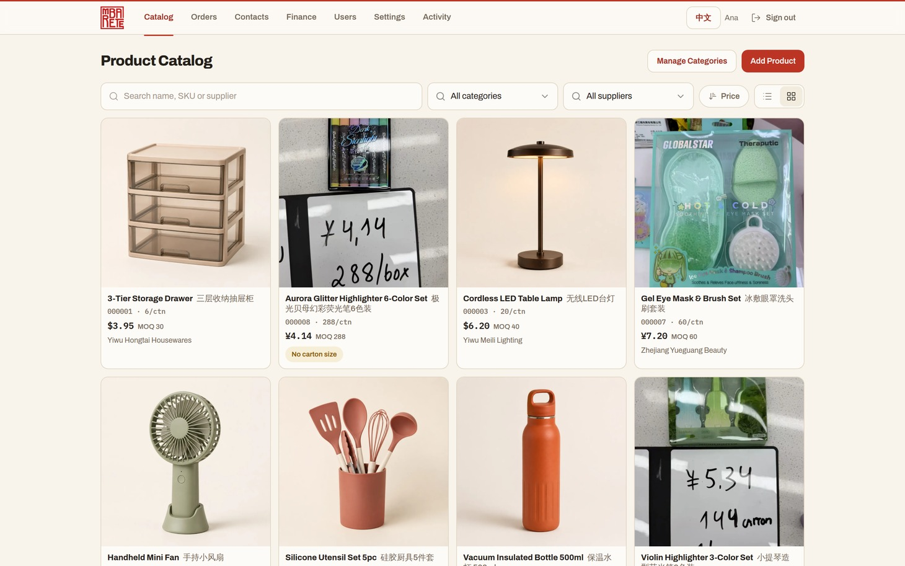
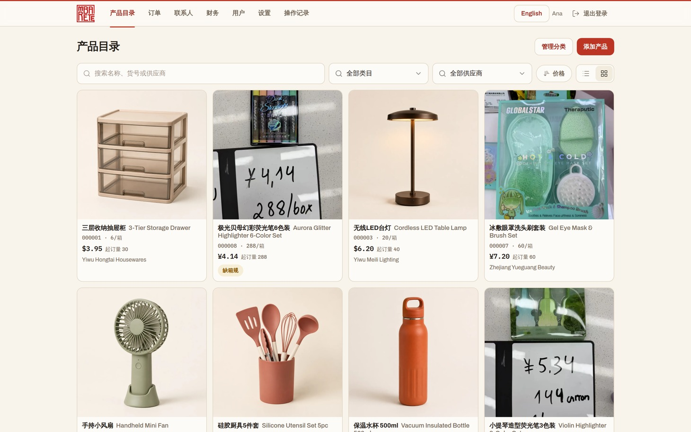
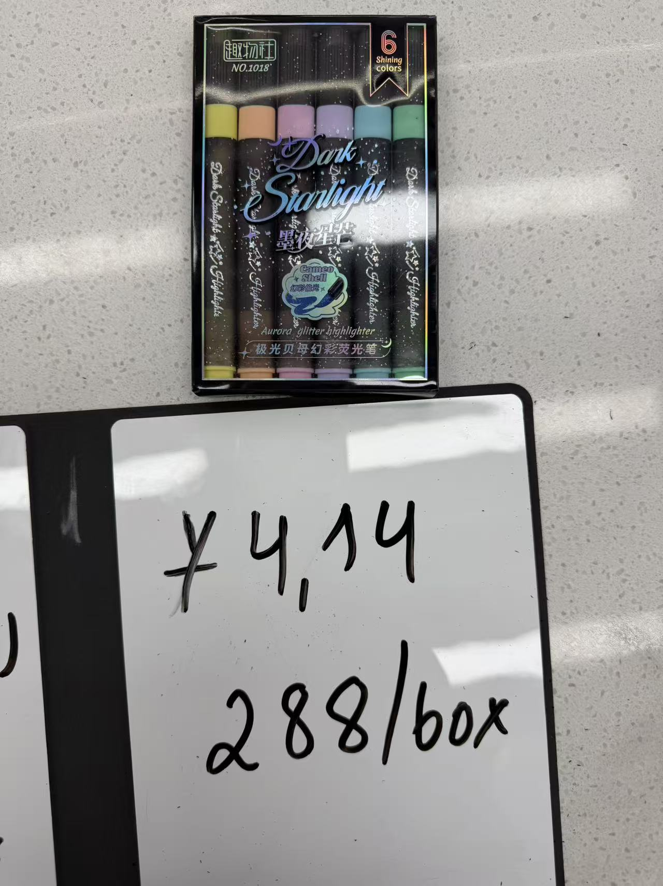
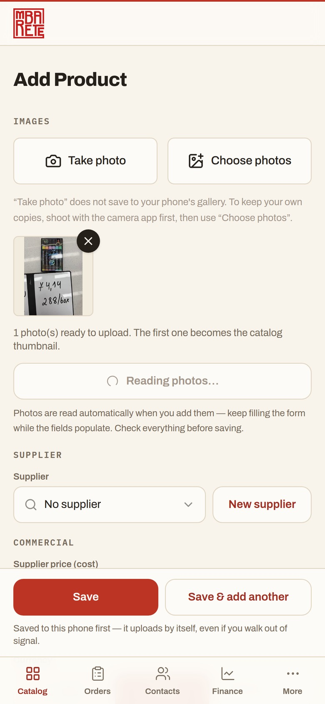
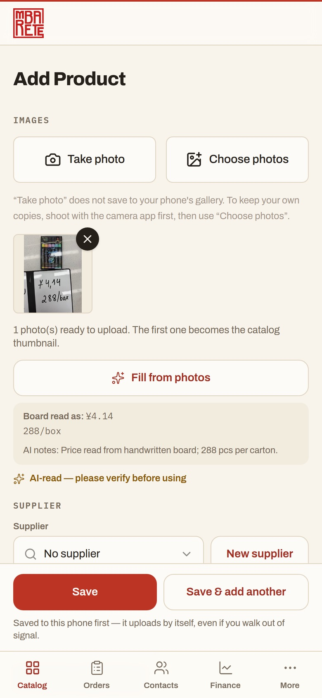

Built in Yiwu
·
Made for sourcing teams
·
义乌
mbarete.app/en/catalog
mbarete.app/zh/catalog


English
⇄
中文

1×


✳
Reading photos… · 正在识别照片…
Product · 产品
Aurora Glitter Highlighter 6-Color Set
极光贝母幻彩荧光笔6色装
Unit price · 单价
¥4.14
MOQ 288 · 288/CTN
Board read · 识别价格板
¥4.14 — 288/box
AI-read — please verify · 请核对后使用
Aurora Glitter Highlighter 6-Color Set
极光贝母…
000008 · 288/ctn
¥4.14
MOQ 288
mbarete.app/en/catalog
Leave the market with a catalog,
not a camera roll.
逛完市场，带走的是产品目录，而不是满手机的照片。
OFFLINE-FIRST
·
ENGLISH +
中文
·
YIWU & CANTON FAIR